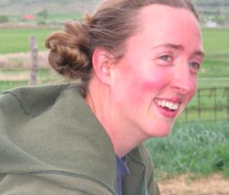

About Me
After many years of outdoor endeavors, I have decided to apply my love of logic and problem solving to a new career. Learning to code has been surprisingly enjoyable and rewarding, and I am excited about all the new possibilities. Most of my professional experience is in retail sales and management, which has allowed me to develop diverse and useful skills, but I believe those can be applied in a new, more rewarding field.
I have worked in the retail nursery industry for about a decade, combined. I also completed a three year-internship on an organic farm, learning to raise livestock and vegetables, and how to structure a self-sustaining business in such a challenging market. I was a Natural Resources Management volunteer with the Peace Corps in Niger, and I am an avid gardener on my own time. I enjoy sharing my knowledge and passion for both ornamental and edible plants with others.
I like to spend time exploring Richmond's park system with my dogs and with friends; I contribute to plant identification projects using the iNaturalist app. Indoor hobbies include cross-stitch embroidery, card games and tabletop games, and reading. I have a particular appreciation for the science fiction and fantasy genres, and I can get lost in books. I am a word nerd, an introvert, and a connoisseur of well-crafted sarcasm.